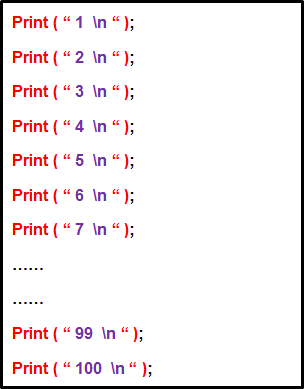
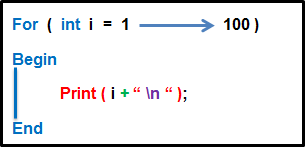

Algorithmsالحلقات و أنواعها في الخوارزميات
مفهوم الحلقات
الحلقة تسمى Loop باللغة الإنجليزية.
تعتبر الحلقات من أهم الأشياء التي عليك التركيز عليها لأنه يمكنك إستخدامها و الإستفادة منها كثيراً في برنامجك, كما أن هناك ثلاث أنواع من الحلقات ستتعرف عليها لاحقاً.
ما هي الفائدة من الحلقات و أين يمكن أن نستفيد منهم؟
فوائدهم كثيرة و هم يوفرون عليك كتابة الكثير من الكودات و بالتالي الكثير من الوقت و الجهد.
الحلقات تستخدم لأغراض كثيرة, مثل تقليص حجم الكود, في قراءة الملفات, تخزين أو عرض عدة بيانات في وقت واحد إلخ..
مثال
المثال التالي يوضح لك فقط كيف يمكن إستغلال الحلقات لإنجاز المهام بسرعة و بكود أقل.
الآن في حال أردنا طباعة جميع الأرقام من 1 إلى 100 و كل رقم منهم على سطر جديد. يوجد طريقتين لذلك.
الطريقة الأولى: كتابة جميع الأرقام التي نريد طباعتها رقماً رقماً بداخل الدالة print() كما في الصورة التالية.

الطريقة الثانية: إستخدام حلقة و تحديد فقط من أي رقم إلى أي رقم تريد أن تطبع كما في الصورة التالية.
ملاحظة: طريقة عمل الحلقة المستخدمة في هذا المثال شرحناها بتفصيل في الدرس التالي. المطلوب منك فقط أن تقارن حجم الكود.

أنواع الحلقات و طريقة تعريفهم
في البداية, كلمة Syntax تعني طريقة تعريف أي شيء في البرمجة.
الآن ستلاحظ أن كل حلقة لها طريقة تعريف مختلفة, أي لها Syntax مختلف.
For Loop
الحلقة for تستخدم لتنيفذ الأوامر عدد محدد من المرّات.
هنا يتم تحديد عدد المرات التي ستستمر الحلقة فيها في تنفيذ الكود منذ البداية.
for ( condition )
{
}
While Loop
الحلقة while تستخدم لتنفيذ الأوامر مرات غير محددة.
هنا الحلقة تستمر في إعادة تنفيذ الأوامر طالما أن الشرط الموضوع لم يتحقق بعد.
while ( condition )
{
}
Do While Loop
الحلقة do while تستخدم لتنفيذ الأوامر مرات غير محددة.
هنا الحلقة تستمر في إعادة تنفيذ الأوامر طالما أن الشرط الموضوع لم يتحقق بعد.
الفرق الوحيد بينها و بين الحلقة while أنها تنفذ الأوامر الموضوعة فيها مرّة واحدة على الأقل.
do
{
}
while ( condition );
ملاحظة
طريقة عمل كل حلقة من الحلقات التي ذكرناها الآن سنشرحها لك بدقة في دروس مقبلة.
طريقة حساب عدد المرات التي تم فيها تنفيذ الأوامر
طريقة البشر في العد
إذا طلبت من إنسان أن يلفظ كلمة Algo خمس مرات على سبيل المثال.
فإنه سيقول: Algo, Algo, Algo,Algo, Algo.
لاحظ أن الإنسان قد يستخدم أصابعه لكي يحسب كم مرة قال الكلمة Algo, و قد يستخدم ورقة و قلم في حال طلبت منه لفظها 100 مرات حتى لا يخطئ بالعد.
طريقة الكمبيوتر في العد
إذا أردت جعل الكمبيوتر يطبع كلمة Algo عشر مرات, عليك إستخدام حلقة تنفذ الكود الذي بداخلها 10 مرات.
الحلقة بدورها ستعتمد في عملية العد على متغير عادي يسمى عدّاد (Counter).
فكرة العداد هي تخزين عدد المرات التي قامت فيها الحلقة بتنفيذ الأوامر التي بداخلها.
في كل مرة يتم فيها تنفيذ جميع الأوامر الموضوعة بداخل الحلقة, يتم زيادة العداد واحداً.
إذاً عند إستخدام حلقة يمكننا معرفة عدد المرات التي قام فيها الحاسوب بتنفيذ الأوامر الموجودة فيها من خلال العداد.
طريقة تحديد كيف سيتم العد في الحلقات
عند التعامل مع أي حلقة, أول شيء عليك التفكير فيه هو وضع الشرط الذي يحدد كم مرة ستقوم الحلقة بإعادة تنفيذ الكود الموضوع فيها.
فمثلاً, لجعل الحلقة تعيد تنفيذ الأوامر الموضوعة فيها 5 مرات يمكنك العد بطرق مختلفة و الحصول على نفس النتيجة.
إذا قمت بالعد من 1 إلى 5 كالتالي 5 - 4 - 3 - 2 - 1 ستحصل على 5 مرات.
إذا قمت بالعد من 0 إلى 4 كالتالي 4 - 3 - 2 - 1 - 0 ستحصل على 5 مرات.
إذا قمت بالعد من 6 إلى 10 كالتالي 10 - 9 - 8 - 7 - 6 ستحصل على 5 مرات.
إذا قمت بالعد من 23 إلى 27 كالتالي 27 - 26 - 25 - 24 - 23 ستحصل على 5 مرات.
إذا قمت بالعد من 100 إلى 104 كالتالي 104 - 103 - 102 - 101 - 100 ستحصل على 5 مرات.
الآن, لاحظ أنه يمكنك العد بالعكس و الحصول أيضاً على 5 مرات.


 محرر الويب
محرر الويب نظام الألوان
نظام الألوان محول الوحدات
محول الوحدات محلل عناوين الشبكات
محلل عناوين الشبكات